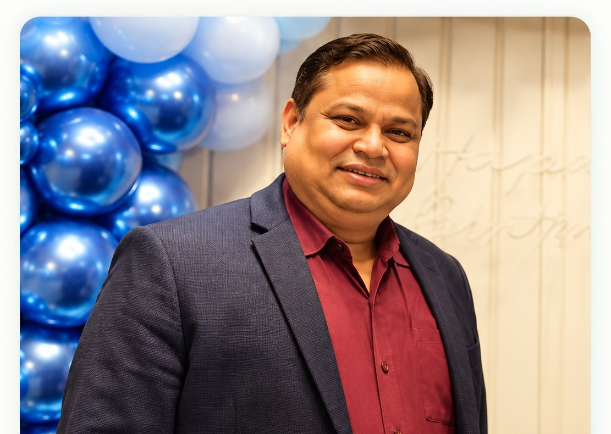

HOMEOPATHIC DOCTOR
Dr. Reshma Singh
MD (Hom) Kolkata
Online consultation available. Patients can book short 10–15 minute consultation slots.
Offline: After 5:00 PM
Sunday: Online only
Book with Dr. ReshmaSunday: Online only
Dr. Reshma Singh aur Dr. O.P. Singh se homeopathic consultation lein. Available slot choose karein, online consult karein aur digital prescription paayein.
Aaradhya's Homoeopathy is led by Dr. Reshma Singh and Dr. O.P. Singh.
MD (Hom) Kolkata
Online consultation available. Patients can book short 10–15 minute consultation slots.

MD (Hom) Kolkata
Experienced homeopathic doctor available for offline consultation after 5 PM and online consultation on Sunday.
Mobile number aur OTP se login karein.
Available date aur 10–15 minute slot choose karein.
Online video consultation join karein.
Consultation ke baad digital prescription access karein.
Upcoming availability check karein aur suitable time reserve karein.